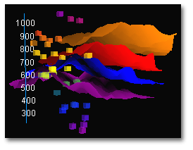

| technology |
| home page |
|
. One-Stop Source For Computer Requirements CUE Technologies, Inc. is a unique technology supplier that offers the broadest range of computer products, electronic components and related items available from a single source. Hard-To-Find Product Specialists CUE Technologies, Inc. Save time by putting our team of experts to work locating your challenging requirements. |
| Click to learn more about Logos Bible Software Series X. com is currently undergoing system maintenance and upgrades. Certain web site features may not currently be available, and online purchasing of products is not available for the time being. If you would like to make an order, please call our toll-free number 1-800-875-6467. We apologize for any inconvenience and thank you for your understanding. |
|  |